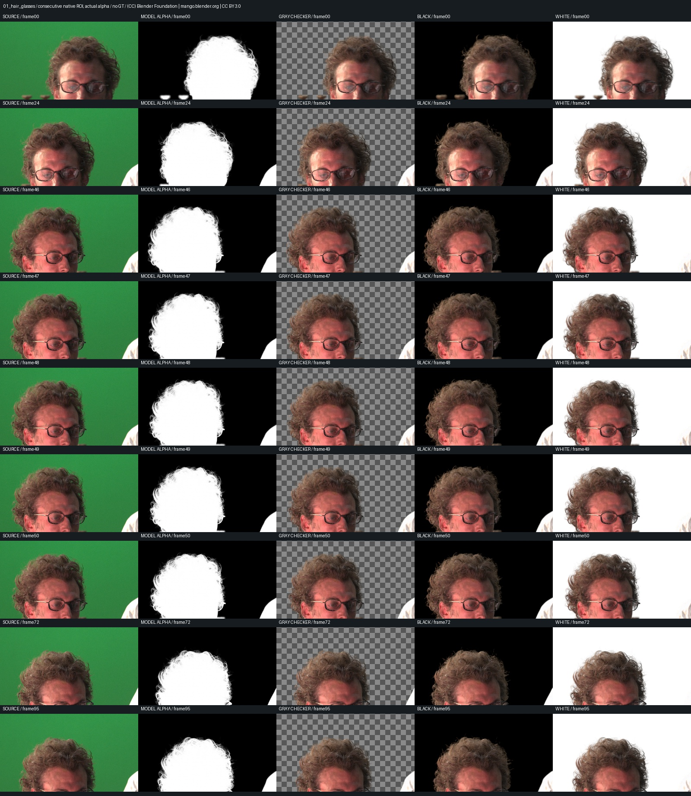
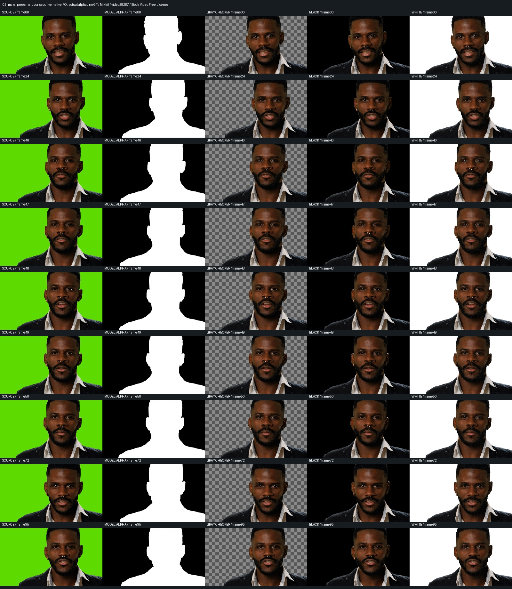
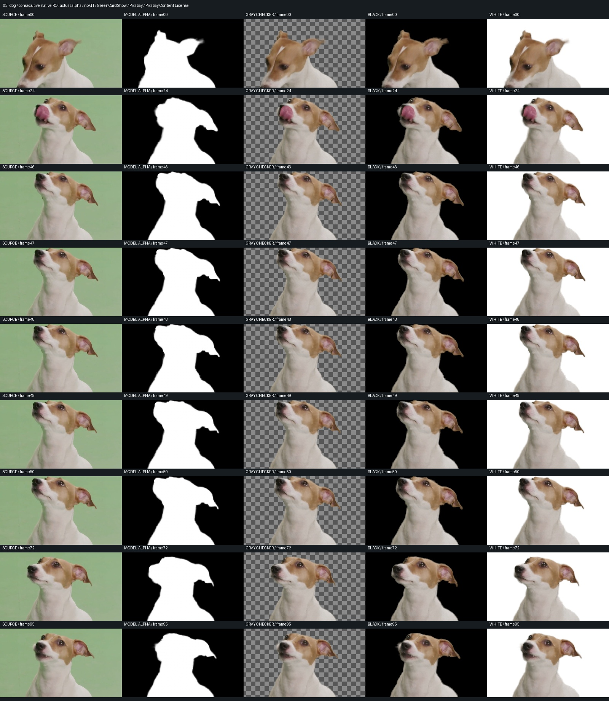
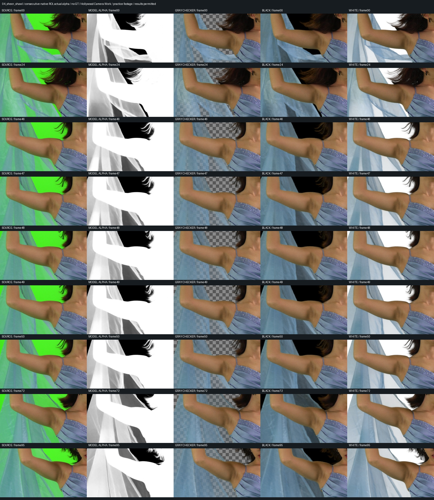
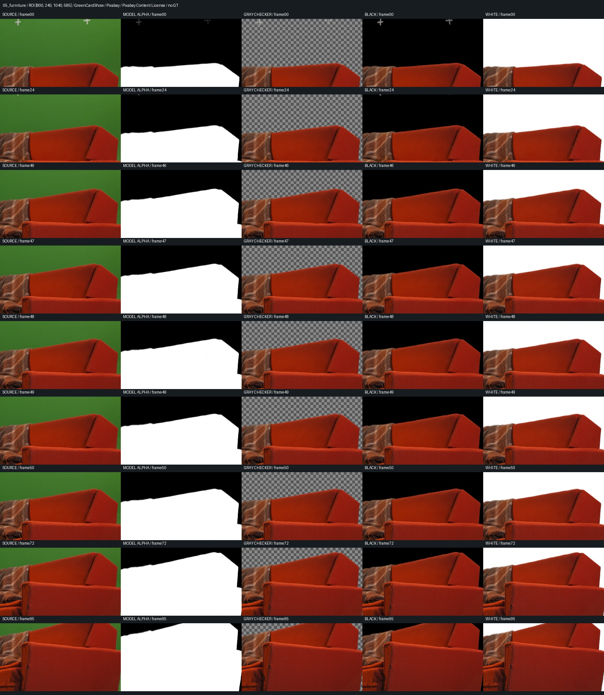
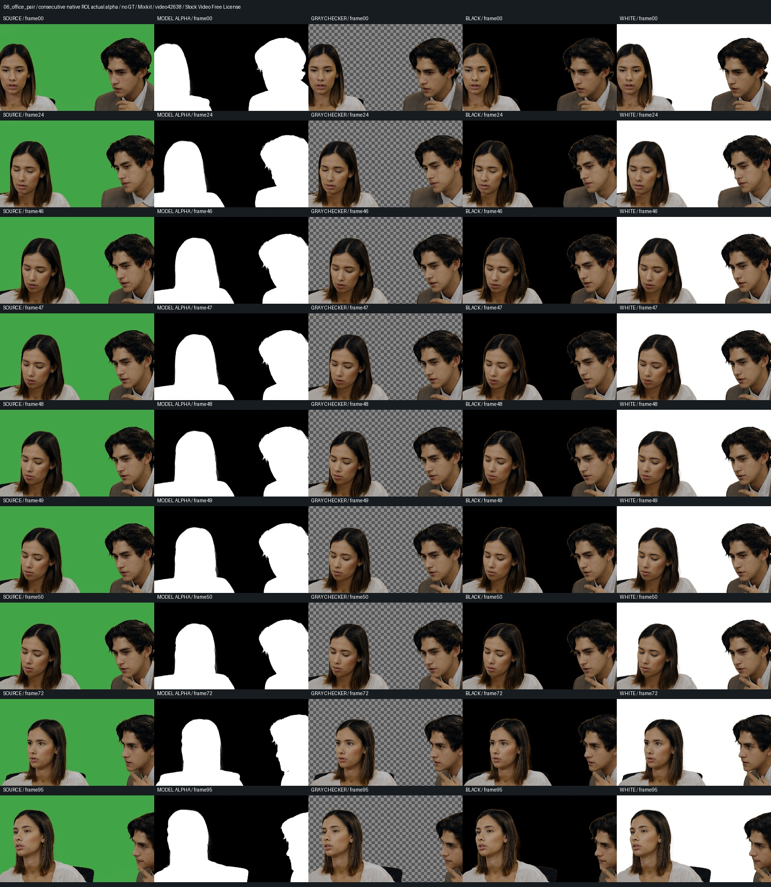
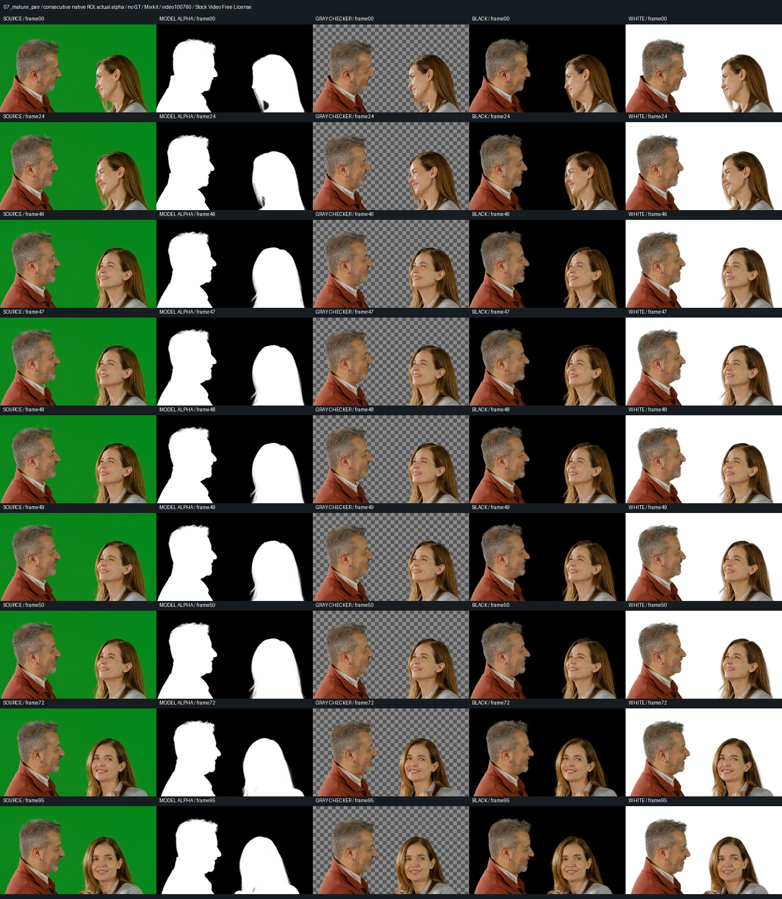
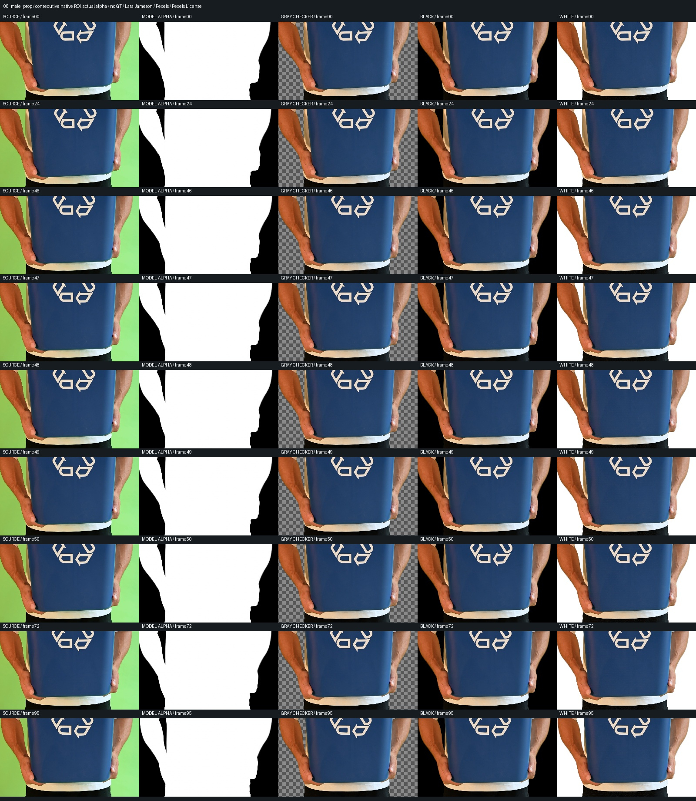

Curly hair and glasses
(CC) Blender Foundation | mango.blender.org | CC BY 3.0. 공식 원본 다운로드
1920×1012,96프레임@24fps / 모델 처리 156.1초. GT 없음.
원본 ROI·알파·체커·검정·흰색과 연속 프레임 검수

곱슬머리·안경, 남성 발표자, 강아지 털, 반투명 숄, 가구 표면, 사무실2인, 중년2인, 소품을 든 남성. 서로 다른 소재의 실제 촬영본을 공식 무료 이용 조건에 따라 다운로드해 처리했습니다. 원본·결과 모두 출처 조건을 따르며 CC0로 재허가하지 않습니다.
완성 릴스는1080×1350/30fps, 위 원본·아래 실제 결과입니다. 풀샷에서 같은 위치로 부드럽게 확대하고, 세로 와이프로 원본·체커·알파·검정/흰 배경을 비교합니다. 네모 표시와 하단 자막 없이 흰 박스·검정 글씨 라벨만 사용합니다. 사례당4초 촬영 구간을3회 반복해12초로 구성했고 합본96초입니다. 음악·내레이션 없음.
공개 GitHub · 완성 릴스·OBS 편집본·검수 패키지 · 직접 검수 기록 · 처리 기록 CSV
실사 정답 알파는 제공되지 않아 정확도 점수를 만들지 않았습니다. 작은 배경 영역의 알파와 처리시간은 진단값입니다. 원본960×720의 비정방 픽셀 숄은1280×720 정방 픽셀로 바로잡았고, 영상25/30/60fps는 실제 속도를 유지해24fps로 프레임 선택했습니다.
OBS는 실제 로컬 작업 모니터를 녹화했습니다. 추론 중 로그와 완료 후 결과 재생을 구별해 표시했습니다. 추론·초기 편집 과정은 제외 요청을 받은 이전 두 번째 사례 구간을 잘라낸 무음 편집본이며, 소스 선택을 위한 의도적인 일시정지가 있습니다. 줌·와이프 수정 과정도 별도 기록했습니다. 초기 녹화 검증 · 모션 수정 녹화 검증
(CC) Blender Foundation | mango.blender.org | CC BY 3.0. 공식 원본 다운로드
1920×1012,96프레임@24fps / 모델 처리 156.1초. GT 없음.

Mixkit / video28287 / Stock Video Free License. 공식 원본 다운로드
1920×1080,96프레임@24fps / 모델 처리 134.7초. GT 없음.

GreenCardShow / Pixabay / Pixabay Content License. 공식 원본 다운로드
2048×1080,96프레임@24fps / 모델 처리 132.2초. GT 없음.

Hollywood Camera Work / practice footage / results permitted. 공식 원본 다운로드
1280×720,96프레임@24fps / 모델 처리 74.9초. GT 없음.

GreenCardShow / Pixabay / Pixabay Content License. 공식 원본 다운로드
1920×1080,96프레임@24fps / 모델 처리 139.3초. GT 없음.

Mixkit / video42638 / Stock Video Free License. 공식 원본 다운로드
1920×1080,96프레임@24fps / 모델 처리 141.3초. GT 없음.

Mixkit / video100760 / Stock Video Free License. 공식 원본 다운로드
1080×1920,96프레임@24fps / 모델 처리 156.0초. GT 없음.

Lara Jameson / Pexels / Pexels License. 공식 원본 다운로드
1080×1920,96프레임@24fps / 모델 처리 142.5초. GT 없음.
